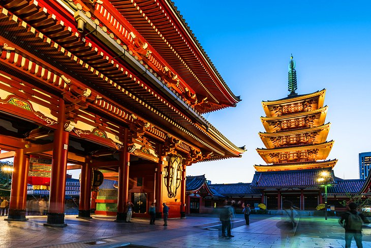

Tour the The Imperial Palace
The chief attraction of Tokyo's Marunouchi district is the Imperial Palace (Kōkyo)
with its beautiful 17th-century parks surrounded by walls and moats. Still in use by the Imperial family,
the Imperial Palace stands on the site where, in 1457, the Feudal Lord Ota Dokan built the first fortress,
the focal point from which the city of Tokyo (or Edo, as it was then) gradually spread.
1/5

The Imperial Palace
Visit the Sensō-ji Temple
In the Asakusa district of Tokyo, the exquisite Sensō-ji Temple
(Kinryū-zan Sensō-ji)) - the city's most famous shrine -
stands at the end of a long street market hosting vendors selling masks,
carvings, combs made of ebony and wood, toys, kimonos, fabrics, and precious paper goods.
2/5

Sensō-ji Temple
See a Show at the Kabuki-za Theatre, Ginza
Tokyo is home to a number of excellent theaters,
none as well known as the historic Kabuki-za Theatre in the city's busy Ginza district,
home to famous traditional Kabuki performances. Based upon a medieval, highly skilled,
and often burlesque theatrical form including song and dance, the theater's performances
are as popular among tourists as they are with Japanese-speaking people.
3/5

Kabuki-za Theatre
Enjoy Nature and Art at the Meiji Shrine
Dedicated to Emperor Meiji and his wife, Empress Shōken,
construction of the splendid Meiji Shrine (Meiji Jingū) began in 1915 and was completed in 1926. Although
the original structure was destroyed during WWII, it was rebuilt in 1958 and remains one of Tokyo's most
important religious sites.
4/5

Meiji Shrine
See the View from the Tokyo Skytree
It's hard to miss the Tokyo Skytree (Tōkyō Sukaitsurī).
This 634-meter-tall communications and observation tower rises out of the city's Sumida district of Minato like a huge rocket ship.
The country's tallest structure (and the world's tallest freestanding tower).
5/5

Tokyo Skytree